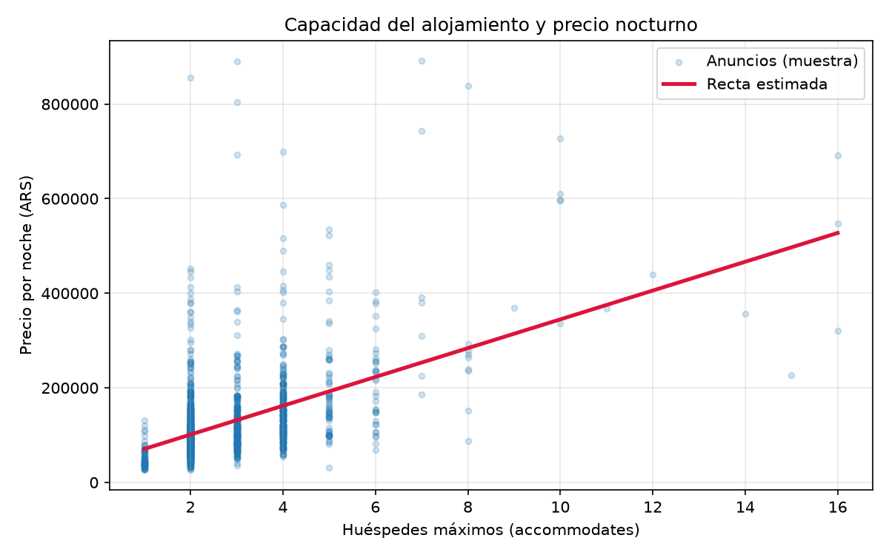
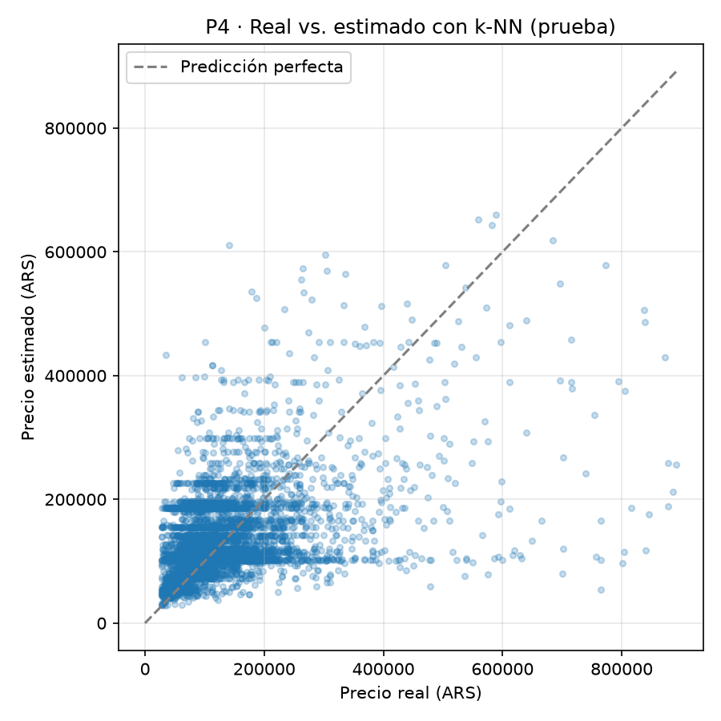

Python para Ciencia de Datos · TP de Scikit-learn · Biblia de defensa
Cuánto cuesta una noche en Buenos Aires,
y cómo defenderlo
Guía, documentación y banco de preguntas en un solo lugar. Explica qué hace el programa en cada
parte del flujo, en qué archivo y función vive cada paso, qué números salen en la corrida y cómo
se leen, y qué contestar si la cátedra pregunta. El código está en la carpeta
tp-airbnb/ de este repositorio. Todos los números de esta página salen de una corrida
real con la extracción de Inside Airbnb del 23/09/2026.
La nota es individual y cualquier integrante puede tener que contestar cualquier pregunta: conviene leer la página entera, no solo «tu parte».
Lo que dijo el profesor
Qué se evalúa y dónde está cada cosa
| Criterio de la defensa | Cómo lo cubre el proyecto |
|---|---|
| Estructura de las carpetas en GitHub | data/raw, data/processed, notebooks/, src/, tests/, reports/figures, docs/: la misma estructura de las clases 14 y 15. Ver Estructura. |
| Todos los documentos de un proyecto Python | README.md, requirements.txt, pyproject.toml, .gitignore, archivos .py con docstrings, data/raw/README.md (de dónde salen los datos), docs/informe.md (resultados, modelo elegido y conclusiones), docs/diccionario_de_datos.md, docs/cambios.md, tests y un notebook ejecutado con sus salidas. |
| Nota individual · todos responden | Esta página. Las preguntas están agrupadas por tema y cada respuesta dice en qué archivo mirar. |
| 30 min de defensa + hasta 20 de preguntas | Guion de la corrida con tiempos sugeridos. |
| Corrida que valide el uso de los datos de Airbnb | python main.py imprime primero la evidencia del origen: archivo, tamaño, cantidad de anuncios, fechas en que Inside Airbnb los relevó y la huella SHA-256, comparada con la del informe. |
Frase para abrir: «Resolvimos los proyectos 1 y 4. Los dos estiman el precio por noche, que es un número, así que son problemas de regresión. El 1 pide una regla explicable con una sola variable: regresión lineal simple. El 4 pide valorar un anuncio comparándolo con anuncios parecidos: k vecinos más cercanos para regresión, con las variables escaladas dentro de un Pipeline.»
Los 30 minutos
Guion de la corrida en vivo
Una propuesta de reparto. Lo importante es que cada bloque muestre código + salida + interpretación.
- (3 min) El problema y la decisión de modelo. La frase de arriba. Mostrar la tabla del README.
- (4 min) La estructura en GitHub. Recorrer las carpetas y decir para qué es cada una. Mostrar el
.gitignorey explicar por quédata/raw/listings.csv.gzno está en el repositorio pero sí cómo obtenerlo. - (2 min) Preparar el entorno.
python -m venv .venv, activarlo,python -m pip install -r requirements.txt. Si ya está creado, solo mostrar que el prompt dice(.venv). - (2 min) Tests.
python -m pytest -v→ 27 passed. Decir: «probamos la limpieza, la carga y los modelos con datos chicos donde el resultado se calcula de cabeza, y los dos proyectos de punta a punta con datos sintéticos». - (3 min) Validación de los datos.
python main.py. Detenerse en el primer bloque (ver abajo): 29.753 anuncios, 90 columnas, relevados del 25 al 27/09/2026, huella coincide → es el archivo de Inside Airbnb Buenos Aires que usamos en el informe. - (7 min) Proyecto 1. Limpieza (cuántas filas se fueron y por qué), 75/25, intercepto y pendiente, métricas contra el modelo base, estimación para 4 huéspedes, tabla real vs. predicho y el gráfico con la recta.
- (7 min) Proyecto 4. Por qué k-NN y por qué Regressor, qué aprendió el escalador, métricas, los 5 vecinos del caso nuevo, el gráfico real vs. predicho y el hallazgo de los gemelos con el análisis de k.
- (2 min) Conclusiones y limitaciones. R² bajo = la capacidad sola explica poco; falta la ubicación. Asociación no es causalidad. Los números dependen de la extracción.
Lo primero que imprime la corrida
====================================================================== DATOS · Inside Airbnb · Buenos Aires · listings.csv.gz (Detailed Listings) ====================================================================== Archivo: listings.csv.gz (18.1 MB) Anuncios: 29,753 · Columnas: 90 Relevado por Inside Airbnb entre 2026-09-25 y 2026-09-27 (extracción publicada el 2026-09-23) Dominio de los anuncios: airbnb.com SHA-256: c8db6461c06c0de3efbdda6821d6d28c9aef7dff3c6fde64ac4fd3661e15b78a Coincide con el archivo del informe: SÍ
Qué decir: «La huella SHA-256 es como una huella digital del archivo: si cambiara un solo byte, cambiaría entera. Coincide con la que anotamos en el README y en config.py, así que estos son exactamente los datos con los que sacamos los números del informe. last_scraped es una columna del propio archivo: dice qué día Inside Airbnb relevó cada anuncio.»
Antes del jueves: probar la corrida en la computadora que se va a usar en la defensa, con el archivo ya descargado (no depender de internet en el aula). La corrida completa tarda menos de un minuto; la validación cruzada del proyecto 4 es lo más lento.
Clases 14 y 15
Estructura de carpetas y para qué sirve cada una
tp-airbnb/
├── README.md qué es, datos, cómo instalar, correr y probar, resultados
├── main.py punto de entrada: valida los datos y corre los proyectos
├── requirements.txt dependencias con versión fija (pandas 2.2.3, scikit-learn 1.9.1…)
├── pyproject.toml nombre/versión del proyecto y configuración de pytest
├── .gitignore .venv, cachés, .env, data/raw/*, salidas regenerables
├── data/
│ ├── raw/ listings.csv.gz (NO versionado) + README con origen y huella
│ └── processed/ p1_datos_limpios.csv, p4_datos_limpios.csv (regenerables)
├── notebooks/
│ └── 01_corrida_y_validacion.ipynb notebook delgado: importa src y verifica con assert
├── src/ código reutilizable (paquete: tiene __init__.py)
│ ├── config.py constantes: rutas, URL, huella, semilla, test_size, k, casos nuevos
│ ├── descargar_datos.py baja el archivo oficial y verifica la huella
│ ├── carga.py lectura, DataFileError, control de columnas, evidencia del origen
│ ├── limpieza.py precio a número, faltantes, imposibles, extremos 1 %–99 %
│ ├── evaluacion.py MAE, RMSE, R², modelo base, tabla real vs. predicho
│ ├── graficos.py dispersión con recta y real vs. predicho
│ ├── proyecto1_capacidad.py caso 1
│ └── proyecto4_similares.py caso 4
├── tests/ conftest.py (fixtures) + test_carga, test_limpieza, test_modelos
├── reports/ *_metricas.txt, *_real_vs_predicho.csv, p1_medianas.csv,
│ │ p4_vecinos.csv, p4_comparacion_k.csv
│ └── figures/ p1_dispersion_recta.png, p1_real_vs_predicho.png, p4_real_vs_predicho.png
└── docs/
├── informe.md resultados, modelo elegido y conclusiones (viaja con el repositorio)
├── diccionario_de_datos.md
└── cambios.md registro de versiones
El archivo original nunca se pisa. Todo (datos limpios, métricas, gráficos) se regenera desde ahí con python main.py.
La lógica vive en funciones importables y probadas. Los scripts de proyecto solo encadenan esas funciones (principio DRY: la limpieza se escribe una vez y la usan los dos proyectos).
El notebook no tiene lógica propia: importa de src, verifica con assert y muestra. Así no hay «código escondido» en celdas corridas fuera de orden.
Salidas que se regeneran en cada corrida: por eso están en .gitignore (se puede cambiar si el grupo quiere mostrarlas en GitHub).
Qué se versiona y qué no (y por qué)
| Sí va a Git | No va a Git |
|---|---|
Código (src/, main.py), tests, notebook, README, requirements.txt, pyproject.toml, .gitignore, data/raw/README.md, docs. |
.venv/ (se recrea con requirements), __pycache__/, .pytest_cache/, .env (secretos: este proyecto no usa ninguno), data/raw/* (18 MB, cambia con cada extracción, se descarga con un script), salidas regenerables. |
El proyecto no usa credenciales: Inside Airbnb es público y se descarga sin cuenta. No hay claves, tokens ni contraseñas en ningún archivo.
Clase 12: el flujo de trabajo en ciencia de datos
El flujo completo, paso a paso
- Carga. Lee
listings.csv.gzcomprimido conpd.read_csv(…, compression="gzip", low_memory=False). Si el archivo no está, no sigue: lanzaDataFileErrorcon el comando para descargarlo («fallar pronto», clase 2.1).main.pycarga una sola vez y le pasa el mismo DataFrame a los dos proyectos. src/carga.py · cargar_listings() - Validación. Comprueba que existan las columnas del caso (Inside Airbnb puede cambiarlas entre extracciones) y calcula la huella SHA-256 para probar que es el archivo del informe. src/carga.py · validar_columnas(), resumir_origen(), calcular_sha256()
- Limpieza. Precio de texto a número, solo las columnas del caso, faltantes fuera, registros imposibles fuera, precios extremos fuera (percentiles 1 y 99). Devuelve los datos y un resumen con cuántas filas quedaron en cada paso. Detalle. src/limpieza.py · preparar_datos()
- División train/test.
train_test_split(X, y, test_size=0.25, random_state=42). El 25 % queda guardado y el modelo no lo ve hasta la evaluación.random_state=42hace que la división sea siempre la misma: los números se pueden reproducir. src/proyecto1_capacidad.py y src/proyecto4_similares.py · ejecutar_proyecto…() - Entrenamiento (
fit). Solo conX_trainey_train. En el proyecto 1, la regresión calcula β0 y β1. En el 4, el Pipeline ajusta el escalador (media y desvío de cada variable) y k-NN guarda los anuncios de entrenamiento. entrenar_regresion_lineal() · crear_pipeline_knn().fit() - Predicción (
predict). SobreX_test: anuncios que el modelo nunca vio. En el proyecto 4, el Pipeline escalaX_testcon la media y el desvío de entrenamiento antes de buscar vecinos. - Evaluación. MAE, RMSE y R² en prueba, comparados con un modelo base que siempre predice el promedio (
DummyRegressor) y con las métricas en entrenamiento (para ver sobreajuste). src/evaluacion.py · calcular_metricas(), evaluar_modelo_base() - Caso nuevo. La estimación que pide cada consigna: 4 huéspedes (P1) y [4 huéspedes, 2 dormitorios, 3 camas, 2 noches] (P4). En P4 además se muestran los 5 vecinos usados. config.CASO_NUEVO_P1 / CASO_NUEVO_P4 · buscar_vecinos()
- Gráficos. Dispersión con la recta (P1) y real vs. estimado (P1 y P4), exportados en PNG. src/graficos.py
- Informe. Tabla real vs. predicho, métricas en texto y datos limpios en CSV. main.py · guardar_resultados()
La regla que atraviesa todo el flujo (clase 12): todo lo que aprende algo de los datos (el escalador, el modelo) se ajusta solo con entrenamiento. Si el escalador aprendiera la media usando también la prueba, el modelo «vería» información del examen antes de rendirlo: eso es fuga de información y da métricas demasiado optimistas.
Clases 3, 4, 10 y 11
Los datos y cada decisión de limpieza
anuncios de Buenos Aires, 90 columnas
pesos argentinos por noche, como texto: "$106,393.00"
son viviendas completas (Entire home/apt)
Cuántas filas quedan en cada paso
| Paso | Proyecto 1 | Proyecto 4 | Por qué |
|---|---|---|---|
| Archivo completo | 29.753 | 29.753 | |
| Sin faltantes en las columnas del caso | 27.634 | 27.143 | Sin precio (2.119) no hay objetivo. P4 pierde más porque también exige beds (522 faltantes) y bedrooms. |
| Sin registros imposibles | 27.634 | 27.143 | Se controló y no apareció ninguno en este archivo (la regla queda por si otra extracción los trae). |
| Sin precios extremos (p1–p99) | 27.086 | 26.599 | Precios admitidos: de ≈ 26.900 a ≈ 899.000 ARS por noche. |
| Entrenamiento / prueba | 20.314 / 6.772 | 19.949 / 6.650 | 75 % / 25 %. |
Las decisiones, una por una
Se borra todo lo que no sea dígito, punto o signo (str.replace(r"[^0-9.-]", "")) y se convierte con pd.to_numeric(errors="coerce"): lo que no se puede convertir queda NaN en vez de romper el programa.
dropna() se aplica después de quedarse con las columnas del caso. Hacerlo sobre las 90 columnas tiraría miles de anuncios por faltantes en columnas que no usamos.
Precio ≤ 0, 0 huéspedes, menos de 1 cama, dormitorios negativos, estadía mínima de 0 o de más de 365 noches (más de un año no es alquiler temporario). 0 dormitorios sí es válido: monoambiente.
Se quedan los precios entre el percentil 1 y el 99, la regla de la guía de la cátedra. El precio máximo del archivo era de 160 millones por noche: casi seguro un error de carga, y una regresión lineal se «tuerce» hacia esos puntos.
Si preguntan «¿eliminar extremos no es maquillar los datos?» (clase 11): un atípico no se borra solo porque un algoritmo lo marca. Acá: (1) la regla es la de la guía de la cátedra y está documentada; (2) se recorta solo el 1 % de cada punta, 548 anuncios de 27.634 en el proyecto 1; (3) los valores de arriba (decenas de millones por noche) no son verosímiles para un alquiler; (4) el resumen de limpieza deja trazado cuántas filas se fueron. Con otro objetivo (por ejemplo, detectar fraude), esos anuncios serían justamente lo interesante.
Cómo es el precio (clase 10)
Después de limpiar, el precio medio es ≈ 129.900 ARS y la mediana ≈ 106.400 ARS. Media > mediana → distribución asimétrica a la derecha (pocos anuncios muy caros tiran la media hacia arriba). Por eso, en el informe, para describir «un precio típico» conviene la mediana.
Para responder «¿qué hace esta función?»
Archivo por archivo
| Archivo | Funciones | Qué hace |
|---|---|---|
config.py | (solo constantes) | Rutas con pathlib, URL y fecha de la extracción, huella SHA-256, TEST_SIZE=0.25, RANDOM_STATE=42, cuantiles 0.01/0.99, predictores, K_VECINOS=5, PESOS_KNN="distance" y los casos nuevos. Un valor que se usa en varios lugares se define una sola vez. |
carga.py | DataFileError, calcular_sha256, cargar_listings, validar_columnas, resumir_origen | Excepción propia de dominio; huella del archivo leída por bloques de 1 MB; lectura con manejo de errores (raise … from exc conserva la causa); control de columnas con diferencia de conjuntos; evidencia del origen. |
limpieza.py | convertir_precio, filtrar_registros_validos, filtrar_extremos_precio, preparar_datos | Las reglas de limpieza. Nunca modifica el DataFrame que recibe (trabaja sobre .copy()), y eso tiene un test. |
evaluacion.py | calcular_metricas, evaluar_modelo_base, imprimir_metricas, tabla_real_vs_predicho | MAE, RMSE (np.sqrt(mean_squared_error)) y R²; el modelo base DummyRegressor(strategy="mean"); una sola función que imprime las métricas alineadas (la usan los dos proyectos); la tabla con columnas Real, Predicho y Error. |
graficos.py | graficar_dispersion_recta, graficar_real_vs_predicho | Matplotlib con fig, ax = plt.subplots(); muestra aleatoria de 1.500 puntos con transparencia (con 27.000 sería una mancha); savefig(dpi=150) antes de cerrar. El módulo no elige el backend de Matplotlib: main.py fija Agg (dibuja en archivo, sin ventanas) y el notebook usa el suyo. |
proyecto1_capacidad.py | entrenar_regresion_lineal, comparar_recta_con_medianas, ejecutar_proyecto1, imprimir_resultados_p1 | El caso 1. comparar_recta_con_medianas arma la tabla «recta vs. precio mediano por capacidad». Detalle. |
proyecto4_similares.py | crear_pipeline_knn, buscar_vecinos, contar_gemelos, comparar_k_con_validacion_cruzada, resumir_gemelos_del_caso, ejecutar_proyecto4, imprimir_resultados_p4 | El caso 4. buscar_vecinos usa modelo[:-1] (todos los pasos del Pipeline menos el último) para transformar el caso igual que en predict, así funciona con o sin escalador. Detalle. |
descargar_datos.py | descargar_listings | Baja el archivo oficial con urllib (biblioteca estándar) a un temporal .part y recién al terminar lo renombra: si se corta la conexión nunca queda un archivo a medias. Verifica la huella; --forzar lo vuelve a bajar. |
main.py | mostrar_origen, guardar_resultados, main | Lee --proyecto 1|4|todos y --rapido con argparse, carga una vez, muestra el origen, corre los proyectos y guarda salidas: cada proyecto devuelve un "resumen" explícito que se guarda en *_metricas.txt. Si falta o está dañado el archivo, termina con código 1 y un mensaje claro. |
Convenciones de código (clase 2)
- PEP 8:
snake_casepara funciones y variables,CapWordspara la claseDataFileError,MAYÚSCULASpara constantes deconfig.py, 4 espacios, imports agrupados arriba. - Nombres con verbo que dicen qué hace la función:
cargar_,validar_,filtrar_,calcular_,graficar_,ejecutar_. - Docstrings con Parameters / Returns / Raises (el formato de la clase 15: «contrato antes que implementación») y anotaciones de tipo (
-> pd.DataFrame). - Comentarios al costado de cada línea importante, explicando el para qué.
if __name__ == "__main__":en cada script: corre al ejecutarlo, no al importarlo.
Proyecto 1 · clase 13
Capacidad y precio: regresión lineal simple
Caso: una regla «sencilla y explicable» para saber cuánto cambia el precio por noche cuando aumenta la cantidad máxima de huéspedes, usando solo accommodates.
Por qué este modelo
- ¿Qué se predice? Un precio: número continuo → regresión (no clasificación).
- ¿Con cuántas variables? Una → simple.
- ¿Qué se necesita? Una regla explicable → una recta, cuya pendiente responde directamente la pregunta.
El modelo entrenado
precio ≈ 40.231 + 30.454 × huéspedes
- Pendiente β1 = 30.454 ARS: en promedio, cada huésped más de capacidad se asocia con ≈ 30.454 pesos más por noche, dentro del rango observado (1 a 16 huéspedes).
- Intercepto β0 = 40.231 ARS: el valor de la recta cuando
accommodates = 0. Matemáticamente necesario, pero sin interpretación práctica: no existe un alojamiento para 0 huéspedes (la clase 13 lo dice así). - Caso nuevo, 4 huéspedes: 40.231 + 30.454 × 4 ≈ 162.046 ARS por noche.
Métricas (prueba: 6.772 anuncios)
| MAE | RMSE | R² | |
|---|---|---|---|
| Regresión lineal · prueba | 48.485 | 79.839 | 0,261 |
| Regresión lineal · entrenamiento | 48.450 | 79.450 | 0,254 |
| Modelo base (siempre el promedio) · prueba | 57.818 | 92.855 | 0,000 |
- MAE 48.485: en promedio, la estimación se equivoca por unos 48.500 pesos por noche (para arriba o para abajo).
- RMSE 79.839: más alto que el MAE porque castiga más los errores grandes: hay anuncios caros que la recta no alcanza.
- R² 0,261: la capacidad explica alrededor del 26 % de la variación del precio. El otro 74 % depende de cosas que el modelo no tiene: barrio, tipo y calidad del alojamiento, temporada, servicios.
- Contra el modelo base: el MAE baja de 57.818 a 48.485 (≈ 16 % menos error). La variable sirve, aunque explica poco.
- Train ≈ test (R² 0,254 vs. 0,261): no hay sobreajuste. Es lo esperable: una recta tiene solo 2 parámetros y no puede «memorizar» 20.000 anuncios.

accommodates es un número entero. Para cada capacidad hay muchísima dispersión vertical: por eso el R² es bajo.La recta contra los datos (precio mediano por capacidad)
| Huéspedes | Anuncios | Mediana real | Recta |
|---|---|---|---|
| 1 | 1.114 | 46.836 | 70.685 |
| 2 | 13.258 | 95.000 | 101.138 |
| 3 | 4.772 | 107.018 | 131.592 |
| 4 | 5.499 | 129.192 | 162.046 |
| 6 | 830 | 206.443 | 222.953 |
| 10 | 61 | 428.833 | 344.769 |
| 12 | 32 | 487.032 | 405.676 |
Hasta 9 huéspedes, la recta queda por encima de la mediana: la regresión lineal estima la media condicional, y en un precio asimétrico la media es mayor que la mediana. De 10 a 13 huéspedes pasa lo contrario: la recta se queda corta, porque los alojamientos muy grandes son pocos (61, 18, 32 y 4 anuncios) y casi no pesan en el ajuste. Casi la mitad de los anuncios son para 2 huéspedes. La corrida imprime esta tabla completa y la guarda en reports/p1_medianas.csv.
Tabla real vs. predicho (primeras filas de prueba)
accommodates Real Predicho Error
4 70325.50 162046.0 -91720.50
3 85613.67 131592.0 -45978.33
2 78188.67 101138.0 -22949.33
2 95298.00 101138.0 -5840.00
2 146154.68 101138.0 45016.68
Todos los anuncios con la misma capacidad reciben la misma predicción: con una sola variable, la recta no tiene forma de distinguirlos. Error = real − predicho; negativo = el modelo sobreestimó.
Conclusión (3 a 5 líneas, como pide la consigna)
Elegimos regresión lineal simple porque el objetivo es numérico, hay un solo predictor y se pide una regla explicable. Cada huésped adicional se asocia con unos 30.500 pesos más por noche, y un alojamiento para 4 huéspedes se estima en unos 162.000 pesos. El modelo se equivoca en promedio unos 48.500 pesos y explica el 26 % de la variación del precio: mejora al promedio, pero la capacidad sola no alcanza para fijar un precio. Es una asociación, no una causa, y vale dentro del rango observado.
Proyecto 4 · clases 11, 12 y 13
Alojamientos similares: k-NN para regresión
Caso: valorar un anuncio nuevo buscando anuncios parecidos por capacidad, dormitorios, camas y noches mínimas, y promediando el precio de los más cercanos.
Por qué este modelo
- «Buscar los más parecidos y promediar su precio» es la definición de k vecinos más cercanos.
- El precio es numérico →
KNeighborsRegressor.KNeighborsClassifier(el de Iris en clase 13) se usaría si el objetivo fuera una categoría, por ejemplo «barato / medio / caro». La guía de la cátedra lo aclara explícitamente. - k-NN decide por distancias: hay que escalar. Sin escalar,
minimum_nights(de 1 a 365) pesaría muchísimo más quebedrooms(de 0 a 10) solo por sus unidades. - El escalado va dentro de un Pipeline: así el escalador se ajusta solo con train y se aplica igual a test y al caso nuevo (sin fuga).
Pipeline(steps=[
("escalador", StandardScaler()), # z = (x - media) / desvío
("knn", KNeighborsRegressor(n_neighbors=5, weights="distance")), # promedio ponderado de 5 vecinos
])
Lo que aprendió el escalador (solo con train)
| Variable | Media | Desvío |
|---|---|---|
| accommodates | 2,95 | 1,51 |
| bedrooms | 1,14 | 0,88 |
| beds | 1,93 | 1,48 |
| minimum_nights | 4,08 | 13,21 |
Ejemplo: un anuncio con 4 huéspedes queda en z = (4 − 2,95) / 1,51 ≈ 0,70. Después de escalar, «un dormitorio de diferencia» y «una cama de diferencia» pesan parecido en la distancia.
weights="distance" (como en la solución de la cátedra): cada vecino pesa según 1 / distancia, así el más cercano influye más. Si un vecino está a distancia 0, scikit-learn usa solo los vecinos a distancia 0, con el mismo peso.
Métricas (prueba: 6.650 anuncios)
| MAE | RMSE | R² | |
|---|---|---|---|
| k-NN escalado, k=5 · prueba | 55.569 | 85.465 | 0,095 |
| k-NN escalado, k=5 · entrenamiento | 49.833 | 77.852 | 0,297 |
| k-NN sin escalar, k=5 · prueba (control) | 54.088 | 83.871 | 0,129 |
| Modelo base (promedio) · prueba | 56.736 | 89.883 | −0,001 |
- Mejora poco al modelo base (RMSE 85.465 vs. 89.883) y explica ≈ 10 % de la variación en prueba.
- Train (0,297) muy por encima de test (0,095): sobreajuste. Con k=5 el modelo copia el ruido de 5 anuncios puntuales.
- Escalar no mejoró en este caso. Abajo está la explicación, y es una de las preguntas más probables.
El hallazgo clave: los «gemelos»
combinaciones distintas de [huéspedes, dormitorios, camas, noches] entre 19.949 anuncios de entrenamiento
de los anuncios de prueba tiene al menos un gemelo exacto en entrenamiento (mismos 4 valores)
gemelos exactos tiene el caso nuevo [4, 2, 3, 2]
Las cuatro variables son números enteros chicos, así que muchísimos anuncios son idénticos en esas cuatro columnas. Consecuencias:
- Los 5 vecinos casi siempre están a distancia 0, escalado o no: por eso escalar cambia muy poco (la diferencia entre 85.465 y 83.871 es ruido de qué 5 gemelos tocaron).
- Entre 278 gemelos empatados, k-NN se queda con 5 por un desempate interno (siempre los mismos, pero arbitrarios): la estimación depende de cuáles 5 fueron. Para el caso nuevo dio 115.463 ARS; el promedio de los 278 gemelos es ≈ 168.500 y la mediana ≈ 147.900.
- Con un k mayor, el modelo promedia más anuncios parecidos y el ruido baja (siguiente tabla).
Los 5 vecinos del caso nuevo
Ese caso tiene 278 gemelos exactos en train (precio medio 168,495 · mediano 147,913); k=5 usa 5 de ellos:
accommodates bedrooms beds minimum_nights precio distancia
4 2.0 3.0 2.0 81470.53 0.0
4 2.0 3.0 2.0 96315.33 0.0
4 2.0 3.0 2.0 168170.00 0.0
4 2.0 3.0 2.0 104469.33 0.0
4 2.0 3.0 2.0 126892.00 0.0
Estimación: (81.471 + 96.315 + 168.170 + 104.469 + 126.892) / 5 ≈ 115.463 ARS
Análisis complementario: ¿qué pasa con otro k? (validación cruzada, solo train)
| k | RMSE val. · distance | RMSE val. · uniform |
|---|---|---|
| 5 | 86.005 | 84.435 |
| 15 | 80.504 | 78.514 |
| 50 | 79.186 | 77.032 |
| 100 | 79.173 | 77.222 |
La validación cruzada parte el entrenamiento en 5 pedazos, entrena con 4 y evalúa en el quinto, rotando; la prueba sigue sin tocarse. El error baja mucho de k=5 a k=15 y se estabiliza alrededor de k=50; uniform anda un poco mejor que distance porque, con tantos empates a distancia 0, ponderar por distancia no agrega información. El modelo del caso sigue siendo k=5 porque lo fija la consigna; este análisis sirve para responder «¿por qué k=5?» y «¿cómo lo mejorarían?».

Conclusión
Elegimos k-NN para regresión porque el caso pide valorar un anuncio a partir de anuncios parecidos y el precio es numérico; las variables se escalan dentro de un Pipeline para que las distancias sean comparables y no haya fuga. Para [4 huéspedes, 2 dormitorios, 3 camas, 2 noches] estima unos 115.000 pesos por noche. Con k=5 el modelo apenas mejora al promedio (R² 0,10) y sobreajusta, porque estas cuatro variables dejan muchos anuncios idénticos y el promedio de 5 depende de cuáles tocan; con un k mayor el error de validación baja. Para estimar bien el precio hacen falta variables de ubicación y de calidad.
Clase 13
Métricas, explicadas sin fórmulas raras
Promedio de |real − predicho|. En pesos. «En promedio me equivoco por X.» Todos los errores pesan igual.
√ promedio de (real − predicho)². En pesos. Al elevar al cuadrado, un error de 200.000 pesa 4 veces más que uno de 100.000. Siempre RMSE ≥ MAE; si la diferencia es grande, hay errores grandes.
1 − (error del modelo / error de predecir siempre el promedio). 1 = perfecto; 0 = igual que el promedio; negativo = peor que el promedio. No tiene unidades.
DummyRegressor(strategy="mean"): predice siempre el promedio de train. Su R² ≈ 0 por definición. «Una métrica sola no dice nada: hay que compararla con una línea base» (clase 13).
¿Por qué no accuracy ni matriz de confusión? Son métricas de clasificación (aciertos de una etiqueta). Acá se predice un número: nunca se «acierta» exacto, se mide cuánto se aleja.
Clase 15
Tests y notebook
python -m pytest -v … tests/test_carga.py ...... · tests/test_flujo_completo.py ... · tests/test_limpieza.py ......... · tests/test_modelos.py ......... ============================= 27 passed in 2.11s ==============================
| Archivo | Qué prueba |
|---|---|
conftest.py | Dos fixtures: listings_ejemplo (8 anuncios con precio como texto, uno sin precio, uno con precio 0, uno con 400 noches, uno con 0 huéspedes) y datos_lineales (precio = 20.000 + 30.000 × huéspedes exacto). |
test_carga.py | Archivo inexistente → DataFileError con mensaje; lee un .csv.gz creado en una carpeta temporal (tmp_path); un .gz cortado (descarga interrumpida) da DataFileError y no un error crudo; columnas faltantes se informan por nombre; huella SHA-256 de un texto conocido. |
test_limpieza.py | Conversión de precios (con @pytest.mark.parametrize: tres formatos en un test); texto inválido → NaN; registros imposibles fuera; cuantiles; conteos de cada paso; la entrada no se modifica; filtro por tipo de alojamiento. |
test_modelos.py | La regresión recupera β0 = 20.000 y β1 = 30.000 de datos exactos; métricas con errores calculables a mano (MAE = 20, RMSE = √500); el Pipeline tiene StandardScaler y un Regressor; k-NN predice el promedio de sus vecinos; buscar_vecinos también funciona sin escalador; conteo de gemelos (de la prueba y del caso nuevo); columna Error. |
test_flujo_completo.py | Integración: corre ejecutar_proyecto1 y ejecutar_proyecto4 de punta a punta con 200 anuncios sintéticos (precio ≈ 30.000 + 25.000 × huéspedes + ruido), comprueba que la pendiente recuperada sea ≈ 25.000, que se guarden PNG, CSV y métricas (con monkeypatch redirige las carpetas de salida a una temporal) y que la descarga solo reemplace el archivo con --forzar (usa una URL file://, sin internet). |
Por qué datos chicos y no el archivo real: los tests tienen que correr en un segundo, sin internet, y con resultados que se calculan de cabeza. Si un test fallara, se sabría exactamente qué regla se rompió (patrón Arrange · Act · Assert).
El notebook notebooks/01_corrida_y_validacion.ipynb es «delgado» (clase 15): importa de src, verifica con assert (huella correcta, más de 20.000 filas, columnas presentes, pendiente positiva, k-NN mejor que el promedio) y corre los dos proyectos. Está guardado ejecutado, con sus salidas, así se ve el resultado al abrirlo en GitHub. Antes de mostrarlo en vivo: Kernel → Restart & Run All.
Plan B
Si algo falla en la corrida en vivo
| Lo que aparece | Qué hacer |
|---|---|
ModuleNotFoundError: No module named 'pandas' (o sklearn) | No está activado el entorno: .venv\Scripts\activate (Windows) o source .venv/bin/activate, y python -m pip install -r requirements.txt. |
ModuleNotFoundError: No module named 'src' | Se está ejecutando desde otra carpeta: hay que pararse en tp-airbnb/ y correr python main.py (o python -m pytest). |
PowerShell no deja ejecutar Activate.ps1 | Usar CMD con .venv\Scripts\activate.bat. No cambiar políticas de la máquina del aula. |
ERROR: No se encontró …listings.csv.gz | python -m src.descargar_datos (necesita internet). Por eso conviene llevar el archivo ya descargado. |
ERROR: No se pudo leer listings.csv.gz (¿descarga incompleta?) | El archivo quedó cortado: python -m src.descargar_datos --forzar. |
| «Coincide con el archivo del informe: NO» | Es otra extracción o el archivo está dañado: los números van a diferir de esta página. Probar con --forzar; si Inside Airbnb ya publicó otra fecha, explicarlo (por eso guardamos la huella). |
| La corrida tarda demasiado | python main.py --rapido saltea el análisis de k (lo más lento) y conserva todo lo que pide la consigna; la tabla de k ya está en reports/p4_comparacion_k.csv. |
| No anda el proyector o la terminal | Mostrar el notebook ya ejecutado o reports/corrida_completa.txt y las imágenes de reports/figures/. |
Clase 14 · cuando el grupo lo decida
Pasarlo a un repositorio de GitHub
Hoy la carpeta vive dentro del sitio de apuntes. Para la defensa conviene un repositorio propio del grupo con esta misma estructura: se copia solo la carpeta tp-airbnb/ (esta página queda en el sitio; lo que la cátedra necesita leer en GitHub ya está en README.md y docs/informe.md).
cd tp-airbnb git init git branch -M main git status # revisar: NO debe aparecer data/raw/listings.csv.gz ni .venv git add . git commit -m "chore: estructura inicial del TP de scikit-learn" git remote add origin <URL_DEL_REPOSITORIO> git push -u origin main # trabajo en equipo: una rama por tarea + pull request revisado git switch -c feature/proyecto-4 git add src/proyecto4_similares.py git commit -m "feat: agrega análisis de k con validación cruzada" git push -u origin feature/proyecto-4 # al entregar: etiqueta anotada para identificar la versión defendida git tag -a v1.0 -m "Versión defendida el 26/11" git push origin v1.0
- Antes del primer push:
git check-ignore -v data/raw/listings.csv.gztiene que mostrar la regla del.gitignore. - Mensajes de commit con verbo y propósito (
feat:,fix:,docs:,test:,chore:), no «cambios varios». - Git ≠ GitHub: Git guarda la historia en la computadora; GitHub aloja el remoto y agrega pull requests, revisión y permisos.
Banco de preguntas
Preguntas probables de la cátedra
Respuestas cortas, para decir en voz alta. Entre paréntesis, dónde mirar.
El problema y los modelos
modelo¿Por qué regresión y no clasificación?
Porque el objetivo es el precio, un número continuo. Clasificación predice etiquetas (compra / no compra, especie de flor). Si hubiéramos convertido el precio en «barato / medio / caro», sería clasificación.
modelo¿Por qué regresión lineal en el proyecto 1?
Un solo predictor, objetivo numérico y se pide una regla explicable: la pendiente dice exactamente cuánto suma cada huésped. Es el modelo inicial que la clase 13 recomienda para un objetivo numérico.
modelo¿Por qué KNeighborsRegressor y no KNeighborsClassifier?
Classifier vota la clase más frecuente entre los vecinos; Regressor promedia sus valores numéricos. Como el precio es un número, promediamos. Classifier serviría si el objetivo fuera una categoría.
modelo¿Qué significa la pendiente? ¿Y el intercepto?
Pendiente 30.454: cada huésped más de capacidad se asocia con 30.454 pesos más por noche, en promedio y dentro del rango observado. Intercepto 40.231: el valor de la recta con 0 huéspedes; es necesario para la recta pero no tiene sentido práctico. (modelo.coef_[0], modelo.intercept_)
modelo¿Cómo «aprende» k-NN? ¿Qué hace fit?
k-NN no calcula coeficientes: en fit guarda los ejemplos de entrenamiento (y el Pipeline ajusta el escalador). En predict calcula la distancia del caso a todos los anuncios guardados, toma los 5 más cercanos y promedia su precio.
modelo¿Qué distancia usa k-NN?
Por defecto, la euclídea (la «distancia en línea recta»: raíz de la suma de las diferencias al cuadrado), calculada sobre las variables ya escaladas.
modelo¿Qué hace weights="distance"?
Pondera cada vecino por 1 / distancia: el más parecido pesa más. Con distancia 0, scikit-learn usa solo los vecinos idénticos con igual peso. Lo dejamos así porque es lo que usa la solución de la cátedra; la validación cruzada muestra que uniform anda un poco mejor con estos datos.
modelo¿Qué es un Pipeline y qué ganan con él?
Una cadena de pasos que se comporta como un solo modelo: fit ajusta cada paso en orden (primero el escalador, después k-NN) y predict aplica los mismos pasos a los datos nuevos. Garantiza que el escalado se aprenda solo con train, que test y el caso nuevo se transformen igual, y deja el flujo listo para validación cruzada (clases 12 y 13).
modelo¿Cómo calcula la regresión lineal la recta?
Por mínimos cuadrados: elige β0 y β1 que hacen mínima la suma de (real − recta)² en los datos de entrenamiento. Eso es lo que hace LinearRegression().fit().
modelo¿Para qué muestran los 5 vecinos?
Para explicar la estimación: k-NN no tiene coeficientes, su «explicación» son los anuncios en los que se basó. Ahí se ve que los 5 son idénticos al caso (distancia 0) y que sus precios van de 81.000 a 168.000.
Escalado y fuga de información
escala¿Por qué hay que escalar en k-NN?
Porque decide por distancias, y la distancia suma diferencias de todas las variables. Sin escalar, una diferencia de 30 noches mínimas pesaría 30 veces más que un dormitorio, solo por las unidades. StandardScaler deja cada variable con media 0 y desvío 1.
escalaEntonces, ¿por qué sin escalar les dio parecido o un poco mejor?
Porque el 97 % de los anuncios de prueba tiene un gemelo exacto en entrenamiento: los 5 vecinos están a distancia 0 y la escala no cambia quién está a distancia 0. La diferencia entre las dos versiones es ruido de qué gemelos tocaron. Escalar sigue siendo lo correcto: en un anuncio sin gemelos, sin escalar, las noches mínimas decidirían casi solas quién es «parecido».
escala¿Por qué el escalado está dentro de un Pipeline?
Para que fit ajuste el escalador solo con train y predict aplique esa misma media y desvío a test y al caso nuevo. Evita escalar todo junto antes de dividir (fuga) y evita olvidarse de escalar el caso nuevo.
escala¿Qué es la fuga de información?
Que el modelo use, al entrenar, información de los datos con los que después se lo evalúa. Por ejemplo, escalar con la media de todo el dataset antes de dividir. Las métricas salen demasiado optimistas.
escala¿Escalaron en el proyecto 1?
No hace falta: con una sola variable, escalar no cambia las predicciones de una regresión lineal, solo la escala de los coeficientes; y dejar accommodates en huéspedes hace que la pendiente se lea en «pesos por huésped», que es lo que pide el caso.
División y evaluación
eval¿Para qué separan train y test?
Para medir el modelo con anuncios que no vio al entrenar, como si fueran anuncios nuevos. Evaluar sobre train da una visión demasiado optimista.
eval¿Qué hace random_state=42?
Fija la semilla del mezclado: la división 75/25 es siempre la misma y los números se pueden reproducir. 42 es una convención; cualquier número fijo sirve.
eval¿Por qué no usaron stratify?
stratify mantiene la proporción de cada clase en train y test: se usa en clasificación (Iris, clase 12). En regresión no hay clases.
eval¿El modelo sobreajusta?
Proyecto 1: no (R² train 0,254 ≈ test 0,261). Proyecto 4: sí (train 0,297 vs. test 0,095), porque con k=5 promedia muy pocos anuncios y copia su ruido. Con k mayor el error de validación baja.
eval¿Qué es la validación cruzada y por qué la usaron solo con train?
Parte train en 5 pedazos, entrena con 4 y evalúa con el quinto, cinco veces, y promedia. Sirve para comparar configuraciones (k, pesos) sin tocar test. Si eligiéramos k mirando test, test dejaría de ser «datos nuevos».
evalUn R² de 0,26 (o de 0,10), ¿no es malo?
Es bajo, y es una conclusión válida: la capacidad (o capacidad + dormitorios + camas + noches) explica una parte chica del precio. El programa está bien; lo que falta son variables (barrio, latitud/longitud, tipo de alojamiento, reseñas, servicios, temporada). Los dos modelos mejoran al promedio.
eval¿Qué relación hay entre el R² y la correlación?
En una regresión lineal simple, R² es la correlación al cuadrado. La correlación entre huéspedes y precio en los datos limpios es ≈ 0,505, y 0,505² ≈ 0,255: prácticamente el R² del proyecto 1 (0,254 en entrenamiento, 0,261 en prueba). Una correlación «moderada» explica solo una cuarta parte de la variación.
eval¿Qué es el modelo base y por qué lo usan?
DummyRegressor(strategy="mean"): predice para todos el precio promedio de train, sin mirar ninguna variable. Es la vara mínima: si un modelo no le gana, no sirve. Los dos le ganan (P1 claramente, P4 por poco).
eval¿Por qué el RMSE es mucho mayor que el MAE?
Porque hay errores grandes: anuncios caros que el modelo subestima. El RMSE eleva cada error al cuadrado y los grandes pesan mucho más.
Datos y limpieza
datos¿Cómo demuestran que usaron los datos de Inside Airbnb?
La corrida muestra el archivo, sus 29.753 anuncios y 90 columnas, las fechas de relevamiento de la propia columna last_scraped y la huella SHA-256, que coincide con la anotada en el README y en config.py. descargar_datos.py tiene la URL oficial.
datos¿Por qué no subieron el CSV a GitHub?
Pesa 18 MB, cada extracción es distinta y los datos se pueden volver a bajar del sitio oficial: se versiona el script y la huella, no el dato. Es la práctica de la clase 14 («versionar la referencia al dato, no el dato»).
datos¿Cómo convirtieron el precio?
Venía como texto, "$106,393.00". Una expresión regular borra todo lo que no es dígito, punto o signo y pd.to_numeric(errors="coerce") lo pasa a número; lo inválido queda NaN y se descarta.
datos¿Por qué eliminaron faltantes y no los imputaron?
Faltaba sobre todo el precio, que es el objetivo: no se puede entrenar ni evaluar sin él, e inventarlo (por ejemplo, con la mediana) agregaría precios falsos. En los predictores faltaban pocos valores (13 en dormitorios, 522 en camas sobre casi 30.000). La consigna pide eliminarlos.
datos¿Por qué el percentil 1 y 99?
Es la regla de la guía de la cátedra. Hay precios de decenas de millones por noche, casi seguro errores, que tuercen la recta. Se pierde el 2 % de los anuncios y queda documentado en el resumen de limpieza. Ver el recuadro «¿no es maquillar?» en Datos.
datos¿Calcular los percentiles con todo el dataset no es fuga?
Es un filtro de calidad del objetivo, no una transformación que el modelo aprende y aplica a los predictores; es lo que hace la solución de la cátedra. Siendo estrictos, se podrían calcular los límites solo con train y aplicarlos a test; con 27.000 anuncios, los límites casi no cambiarían.
datos¿En qué moneda está el precio?
Pesos argentinos por noche (la extracción de Buenos Aires publica precios en ARS). Es alquiler temporario, no precio de compraventa.
Código, estructura y testing
código¿Para qué sirve config.py?
Para tener en un solo lugar los valores que se usan en varios archivos: rutas, semilla, test_size, k, casos nuevos. Si cambia algo, se cambia una vez (DRY).
código¿Qué es DataFileError y por qué «raise … from exc»?
Una excepción propia del proyecto: convierte errores técnicos (archivo inexistente, gzip roto) en un mensaje que se entiende. from exc conserva el error original como causa, así no se pierde el traceback. Es el patrón de la clase 2.1.
código¿Por qué las funciones trabajan sobre .copy()?
Para no modificar el DataFrame que reciben: quien llama sigue teniendo sus datos intactos. Hay un test que lo verifica.
código¿Para qué está if __name__ == "__main__"?
Para que el código de abajo corra solo cuando se ejecuta el archivo (python main.py) y no cuando otro archivo lo importa (por ejemplo, los tests).
tests¿Qué es una fixture?
Una función con @pytest.fixture que prepara datos para los tests. Cada test que la pide como parámetro recibe una copia nueva: no se repite la construcción de datos en cada test.
tests¿Pytest o unittest? ¿Por qué pytest?
Pytest: funciones simples con assert, fixtures y parametrización. Unittest viene con Python y usa clases con setUp y assertEqual. Elegimos pytest por legibilidad, como recomienda la clase 15.
entorno¿Qué es el entorno virtual y por qué no está en el repo?
Una instalación de Python aislada para el proyecto, con sus versiones de librerías. No se sube porque es pesada y depende de cada computadora: cada uno la recrea con pip install -r requirements.txt, que sí está versionado.
entorno¿Por qué las versiones fijas en requirements.txt?
Para que cualquiera obtenga los mismos resultados: otra versión de scikit-learn o pandas podría cambiar detalles (por ejemplo, el desempate de vecinos o la interpolación de cuantiles).
Para no caer
Preguntas trampa
trampa«Entonces, si agrego un huésped, ¿el precio sube 30.454?»
No necesariamente. Es una asociación observada entre anuncios distintos, no el efecto de agregar una cama a un mismo departamento. Los alojamientos para más gente suelen ser más grandes, estar en otras zonas, etc. Para hablar de causa haría falta otro diseño.
trampa«Estimen el precio para 30 huéspedes.»
La recta da un número (≈ 954.000), pero está fuera del rango observado (1 a 16 huéspedes): sería extrapolar, y la clase 13 lo marca como error frecuente.
trampa«¿Por qué no usaron accuracy?»
Accuracy es de clasificación: proporción de etiquetas acertadas. En regresión se mide la distancia al valor real: MAE, RMSE, R².
trampa«Si corro el programa con otro archivo, ¿me da lo mismo?»
No: Inside Airbnb publica extracciones nuevas y los precios cambian. Por eso guardamos la fecha y la huella del archivo, y la corrida avisa si la huella no coincide.
trampa«¿k=5 es el mejor k?»
No: lo fija la consigna. Con validación cruzada sobre train, el error baja hasta k≈50 (RMSE de validación 86.005 → 79.186 con distance, 77.032 con uniform). Si pudiéramos elegir, tomaríamos un k más grande, elegido con validación cruzada y confirmado una sola vez en test.
trampa«Si corro dos veces, ¿k-NN da lo mismo?»
Sí: la división es fija (random_state=42) y k-NN no tiene azar. Con empates, el desempate interno también es determinístico: mismos datos, mismos vecinos.
trampa«¿El R² negativo del modelo base es un error?»
No: el modelo base predice el promedio de train y se evalúa en test, cuyo promedio es apenas distinto. Por eso da ≈ 0 (−0,000036 en P1, −0,001 en P4).
trampa«¿Por qué el gráfico muestra 1.500 puntos si hay 27.000?»
Es una muestra aleatoria reproducible (random_state=42) solo para que el gráfico se pueda leer; el modelo se entrenó con los 20.314 de train.
Jueves 26/11
Checklist del día
- Repositorio de GitHub con la estructura de esta página;
data/raw/listings.csv.gzNO subido. - README con los nombres de los integrantes completos.
- En la computadora de la defensa:
.venvcreado,requirements.txtinstalado y el archivo ya endata/raw/(no depender del wifi). python -m pytest -v→ 27 passed.python main.pycorre de punta a punta y la huella dice «SÍ».- Notebook: Restart & Run All sin errores.
- Cada integrante puede explicar: por qué regresión, por qué cada modelo, qué es la fuga, por qué escalar, qué dicen MAE/RMSE/R², los gemelos y por qué no se sube el CSV.
- Tener abiertos los gráficos de
reports/figures/por si la proyección falla.